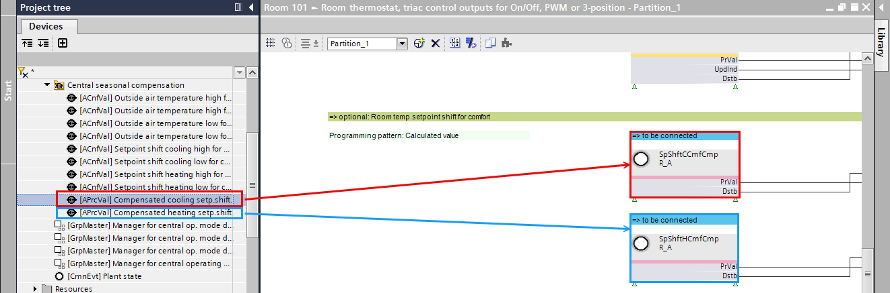

Adapting the RDG2 central seasonal compensation
By adjusting the flow temperature to the outside temperature, a constant indoor climate is maintained. This leads to greater comfort for building users, as temperature fluctuations are minimized.
- The Central seasonal compensation is available.
- Go to Building > Building structure.
- Right-click a device and select Go to engineering.
- Open the KNX PL-Link task.
- In the KNX PL-Link area, select a device (room).
- Right-click and select Show in program.
- The Programming editor opens.
- In the Project tree, select [Room name] > Resources > KNX PL-Link > [Room name].
- Select the Device chart.
- Right-click and select Open.
- The device chart opens.
- In the Project tree, select [Central function] > BACnet > Central seasonal compensation.
- Drag the Compensated cooling setp.shift for comf. to the SpShftCCmfCmp FB.
- Drag the Compensated heating setp.shift for comf. to the SpShftHCmfCmp FB.
